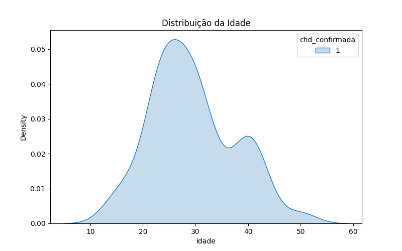
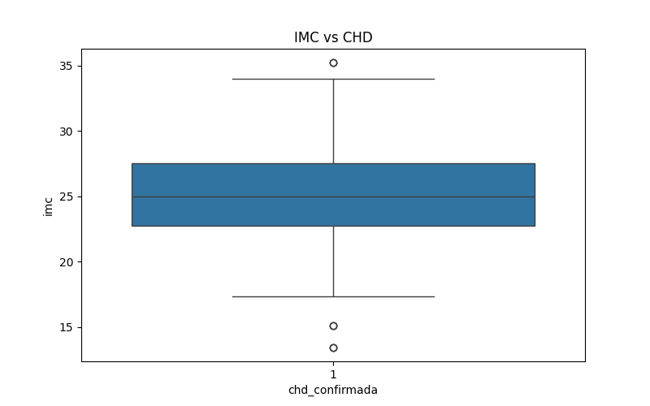
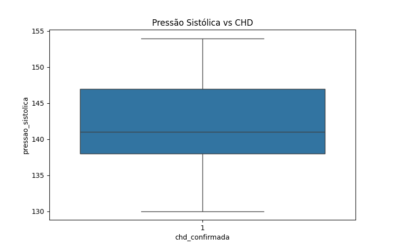
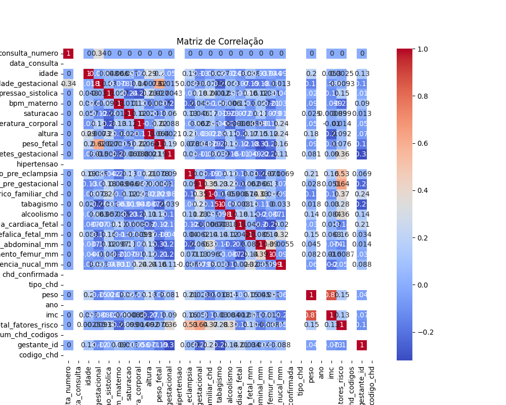

Relatório de Análise de Dados
Tabelas Estatísticas
Tabela 1 — Valores Faltantes
| Total Faltante | % Faltante | |
|---|---|---|
| consulta_numero | 0 | 0.0 |
| data_consulta | 135 | 100.0 |
| idade | 0 | 0.0 |
| idade_gestacional | 0 | 0.0 |
| pressao_sistolica | 0 | 0.0 |
| bpm_materno | 0 | 0.0 |
| saturacao | 0 | 0.0 |
| temperatura_corporal | 0 | 0.0 |
| altura | 0 | 0.0 |
| peso_fetal | 0 | 0.0 |
| diabetes_gestacional | 0 | 0.0 |
| hipertensao | 0 | 0.0 |
| hipertensao_pre_eclampsia | 0 | 0.0 |
| obesidade_pre_gestacional | 0 | 0.0 |
| historico_familiar_chd | 0 | 0.0 |
| uso_medicamentos | 0 | 0.0 |
| tabagismo | 0 | 0.0 |
| alcoolismo | 0 | 0.0 |
| frequencia_cardiaca_fetal | 0 | 0.0 |
| circunferencia_cefalica_fetal_mm | 0 | 0.0 |
| circunferencia_abdominal_mm | 0 | 0.0 |
| comprimento_femur_mm | 0 | 0.0 |
| translucencia_nucal_mm | 0 | 0.0 |
| doppler_ducto_venoso | 0 | 0.0 |
| eixo_cardiaco | 0 | 0.0 |
| quatro_camaras | 0 | 0.0 |
| chd_confirmada | 0 | 0.0 |
| tipo_chd | 135 | 100.0 |
| peso | 0 | 0.0 |
| ano | 135 | 100.0 |
| imc | 0 | 0.0 |
| class_pressao | 0 | 0.0 |
| trimestre | 0 | 0.0 |
| total_fatores_risco | 0 | 0.0 |
| alteracao_estrutural | 0 | 0.0 |
| num_chd_codigos | 0 | 0.0 |
| gestante_id | 0 | 0.0 |
| codigo_chd | 135 | 100.0 |
Tabela 2 — Estatísticas Descritivas
| Média | Mediana | Desvio Padrão | |
|---|---|---|---|
| consulta_numero | 2.000000 | 2.000000 | 0.819538 |
| data_consulta | NaN | NaN | NaN |
| idade | 29.377778 | 28.000000 | 7.949342 |
| idade_gestacional | 39.375556 | 39.600000 | 4.827834 |
| pressao_sistolica | 142.555556 | 141.000000 | 7.007104 |
| bpm_materno | 101.688889 | 101.000000 | 7.023911 |
| saturacao | 91.400000 | 91.000000 | 1.328224 |
| temperatura_corporal | 36.891111 | 36.900000 | 0.362097 |
| altura | 1.660889 | 1.670000 | 0.054642 |
| peso_fetal | 2579.666667 | 2730.000000 | 941.383842 |
| diabetes_gestacional | 0.200000 | 0.000000 | 0.401490 |
| hipertensao | 1.000000 | 1.000000 | 0.000000 |
| hipertensao_pre_eclampsia | 0.577778 | 1.000000 | 0.495753 |
| obesidade_pre_gestacional | 0.200000 | 0.000000 | 0.401490 |
| historico_familiar_chd | 0.177778 | 0.000000 | 0.383750 |
| tabagismo | 0.088889 | 0.000000 | 0.285643 |
| alcoolismo | 0.088889 | 0.000000 | 0.285643 |
| frequencia_cardiaca_fetal | 174.844444 | 175.000000 | 8.683375 |
| circunferencia_cefalica_fetal_mm | 328.053333 | 330.700000 | 11.904651 |
| circunferencia_abdominal_mm | 309.597778 | 311.900000 | 11.699875 |
| comprimento_femur_mm | 70.206667 | 70.600000 | 2.731770 |
| translucencia_nucal_mm | 3.520000 | 3.600000 | 0.599851 |
| chd_confirmada | 1.000000 | 1.000000 | 0.000000 |
| tipo_chd | NaN | NaN | NaN |
| peso | 68.726667 | 67.500000 | 11.471641 |
| ano | NaN | NaN | NaN |
| imc | 24.950755 | 24.982699 | 4.275410 |
| total_fatores_risco | 2.333333 | 2.000000 | 0.992509 |
| num_chd_codigos | 0.000000 | 0.000000 | 0.000000 |
| gestante_id | 23.000000 | 23.000000 | 13.035543 |
| codigo_chd | NaN | NaN | NaN |
Tabela 3 — Teste de Normalidade (Shapiro-Wilk)
| p_valor | |
|---|---|
| consulta_numero | 1.570383e-12 |
| idade | 5.625229e-04 |
| idade_gestacional | 1.094925e-02 |
| pressao_sistolica | 1.220004e-04 |
| bpm_materno | 1.704753e-04 |
| saturacao | 3.981460e-10 |
| temperatura_corporal | 2.214941e-05 |
| altura | 3.905468e-07 |
| peso_fetal | 4.318984e-05 |
| diabetes_gestacional | 1.081113e-19 |
| hipertensao | 1.000000e+00 |
| hipertensao_pre_eclampsia | 5.455297e-17 |
| obesidade_pre_gestacional | 1.081113e-19 |
| historico_familiar_chd | 3.853837e-20 |
| tabagismo | 2.397747e-22 |
| alcoolismo | 2.397747e-22 |
| frequencia_cardiaca_fetal | 2.536368e-06 |
| circunferencia_cefalica_fetal_mm | 3.750011e-06 |
| circunferencia_abdominal_mm | 1.622994e-08 |
| comprimento_femur_mm | 1.634218e-04 |
| translucencia_nucal_mm | 3.344993e-06 |
| chd_confirmada | 1.000000e+00 |
| peso | 1.020066e-04 |
| imc | 3.186149e-03 |
| total_fatores_risco | 1.752731e-09 |
| num_chd_codigos | 1.000000e+00 |
| gestante_id | 1.569370e-04 |
Tabela 4 — Teste Mann-Whitney
| Variável | p_valor |
|---|
Tabela 5 — Teste Qui-Quadrado
| Variável | p_valor |
|---|---|
| diabetes_gestacional | 1.0 |
| hipertensao_pre_eclampsia | 1.0 |
| obesidade_pre_gestacional | 1.0 |
| tabagismo | 1.0 |
| alcoolismo | 1.0 |
Tabela 6 — Correlação com CHD
| chd_confirmada | |
|---|---|
| consulta_numero | NaN |
| data_consulta | NaN |
| idade | NaN |
| idade_gestacional | NaN |
| pressao_sistolica | NaN |
| bpm_materno | NaN |
| saturacao | NaN |
| temperatura_corporal | NaN |
| altura | NaN |
| peso_fetal | NaN |
| diabetes_gestacional | NaN |
| hipertensao | NaN |
| hipertensao_pre_eclampsia | NaN |
| obesidade_pre_gestacional | NaN |
| historico_familiar_chd | NaN |
| tabagismo | NaN |
| alcoolismo | NaN |
| frequencia_cardiaca_fetal | NaN |
| circunferencia_cefalica_fetal_mm | NaN |
| circunferencia_abdominal_mm | NaN |
| comprimento_femur_mm | NaN |
| translucencia_nucal_mm | NaN |
| chd_confirmada | NaN |
| tipo_chd | NaN |
| peso | NaN |
| ano | NaN |
| imc | NaN |
| total_fatores_risco | NaN |
| num_chd_codigos | NaN |
| gestante_id | NaN |
| codigo_chd | NaN |
Visualizações Gráficas
Figura 1 — Distribuição da Idade

Figura 2 — IMC vs CHD

Figura 3 — Pressão Sistólica

Figura 4 — Fatores de Risco

Figura 5 — Matriz de Correlação
